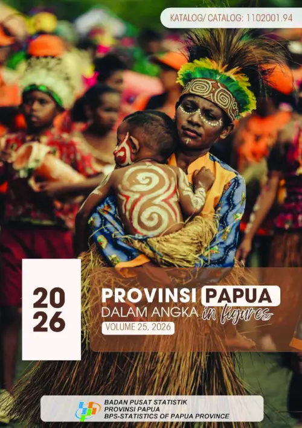
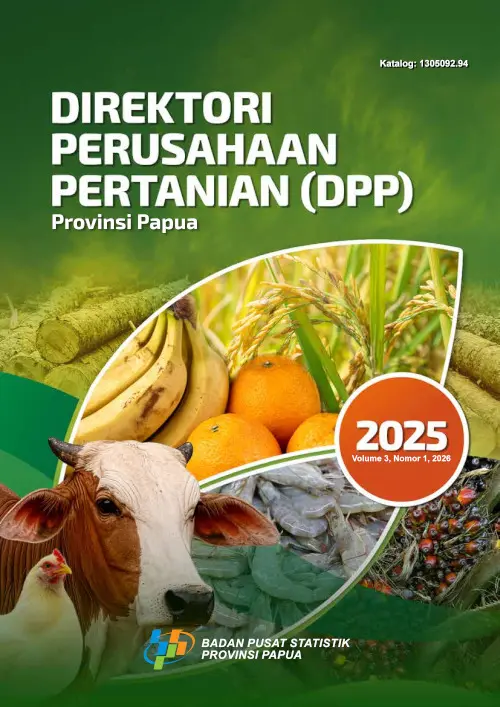
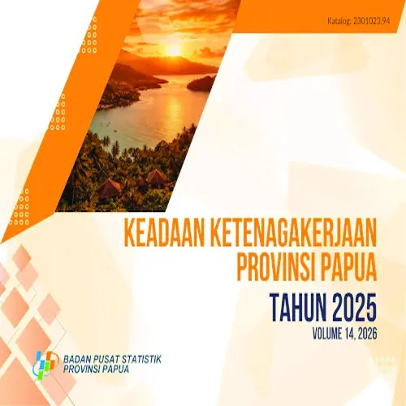
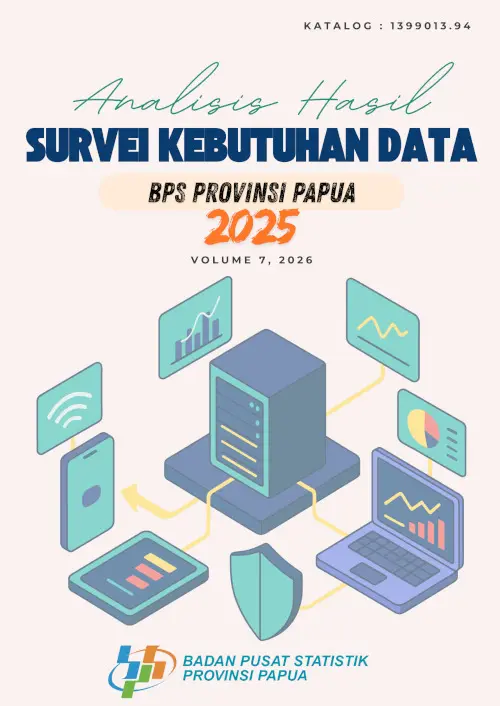
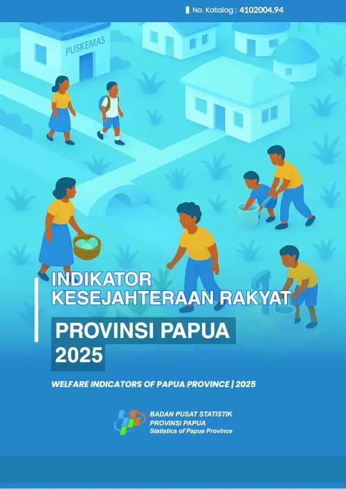

| No | Judul | Tanggal Rilis | Sampul | Kata Kunci | Abstraksi |
|---|---|---|---|---|---|
| 1 | Provinsi Papua Dalam Angka 2026 | 27 Februari 2026 |  |
Geografi dan iklim, pariwisata, pemerintahan | Publikasi ini menyajikan beragam jenis data yang bersumber dari BPS dan institusi lain dan memuat gambaran umum tentang keadaan geografi dan iklim, pemerintahan, serta perkembangan kondisi sosial-demografi dan perekonomian di Provinsi Papua. |
| 2 | Direktori Perusahaan Pertanian (DPP) Provinsi Papua 2026 | 5 Maret 2026 |  |
Pertanian, DUTL, Sensus Pertanian | Publikasi DPP ini memuat hasil dari updating DPP yang meliputi metodologi, konsep definisi, ringkasan hasil, infografis, rekap tabel dan ulasan per subsector termasuk jasa pertanian serta lampiran. Lampiran terdiri dari kuesioner dan eform DPP2025 sehingga mempermudah pengguna dalam memahami alur pendataan yang telah dilakukan. |
| 3 | Keadaan Ketenagakerjaan Provinsi Papua Tahun 2026 | 2 Maret 2026 |  |
Tenaga kerja, ekonomi, rumah tangga | Publikasi ini memuat tabel-tabel yang menggambarkan keadaan angkatan kerja di Provinsi Papua pada semester kedua di tahun 2025. Data yang disajikan diperoleh dari hasil Survei Angkatan Kerja Nasional (Sakernas) yang dilakukan oleh Badan Pusat Statistik (BPS) Provinsi Papua pada bulan Agustus tahun 2025 di seluruh wilayah Papua. |
| 4 | Survei Kebutuhan Data Provinsi Papua 2026 | 30 Januari 2026 |  |
Kualitas data, survei, IKK | Publikasi ini menyajikan beragam jenis data yang bersumber dari BPS dan institusi lain dan memuat gambaran umum tentang keadaan geografi dan iklim, pemerintahan, serta perkembangan kondisi sosial-demografi dan perekonomian di Provinsi Papua. |
| 5 | Indikator Kesejahteraan Rakyat Provinsi Papua 2026 | 30 Desember 2023 |  |
Demografi, kesejahteraan, sosial | Publikasi ini merupakan publikasi yang dikeluarkan oleh Badan Pusat Statistik Provinsi Papua yang menyajikan tingkat perkembangan kesejahteraan penduduk Provinsi Papua antar waktu dan perbandingannya baik antar kabupaten/kota, daerah tempat tinggal (perkotaan dan perdesaan), maupun jenis kelamin. |